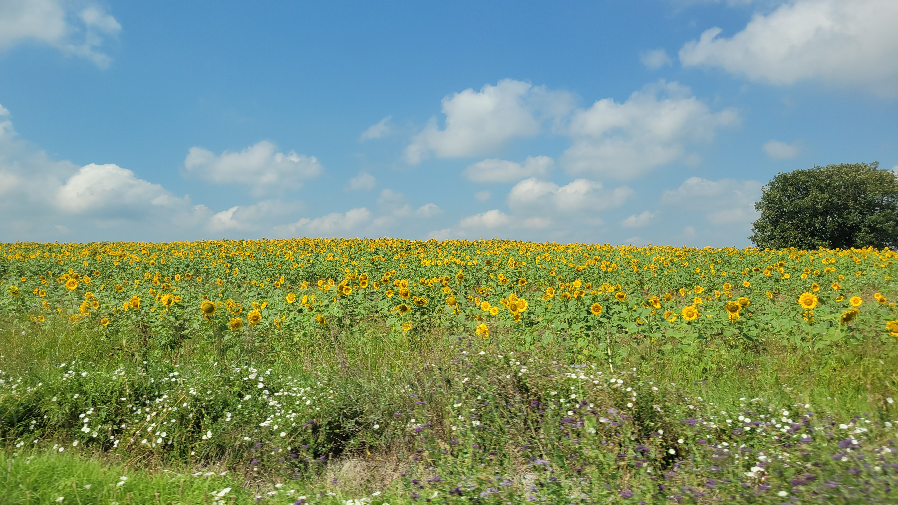
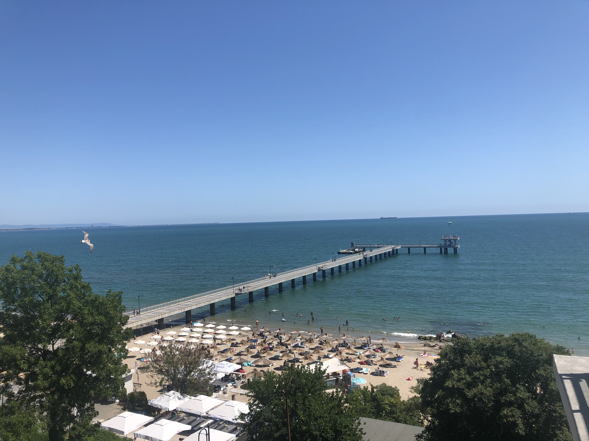
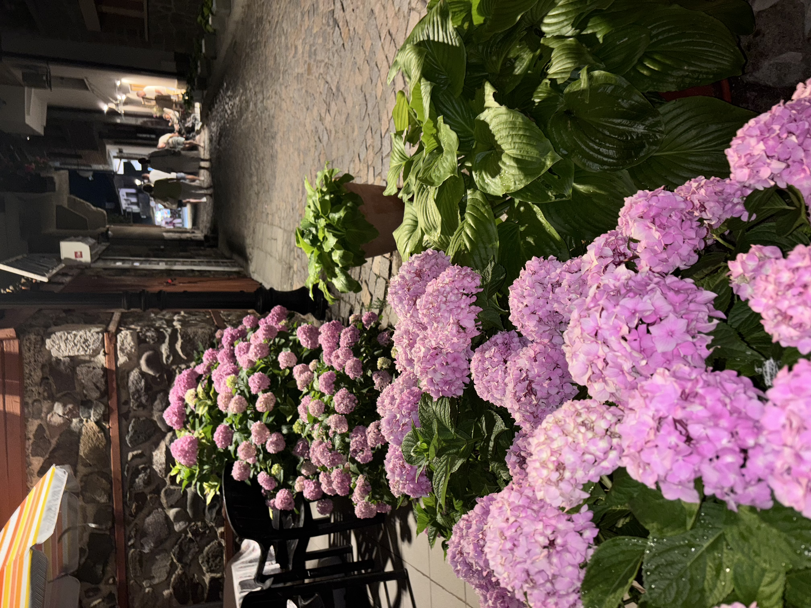

Welcome — introduce yourself!
Tell everyone where you're flying from and roughly when you're planning to land in Burgas or Sofia. If your dates line up with someone else's, say hi — no reason to sit at separate gates.
A coastal Bulgarian celebration by the Black Sea — the water that means home to us.
Join Us



Three days on the southern Black Sea coast, all within walking distance of the old town.
An easy, casual night to greet everyone as they arrive for the weekend — good food, good wine, and a chance to meet the rest of the group before the big day. Details on location and time to follow.
Ceremony and celebration by the coast. Full timing, venue details, and dress code will be added here closer to the date — check back for updates.
No agenda, no schedule — just sand, sun, and the Black Sea. Come recover, keep celebrating, and enjoy the coast before you head home.
One of Bulgaria's oldest towns, sitting on a small peninsula on the southern Black Sea coast — cobblestone lanes, whitewashed wooden houses, and water on nearly every side. We wanted a place that felt like a real trip, not just a wedding, and this was it.
To your lodging for the weekend.
We're still finalizing housing and transportation options for the wedding. We will post the full update directly on this page. Check back soon, or reach out to us directly if you want to start planning early!
Use this space to find travel buddies, swap flight info, plan side trips, or ask each other questions.
Tell everyone where you're flying from and roughly when you're planning to land in Burgas or Sofia. If your dates line up with someone else's, say hi — no reason to sit at separate gates.
It's about a 4-hour drive from Sofia to where we're staying. If you're flying into Sofia instead of Burgas, drop your dates here and see who else is on the same schedule — splitting a private transfer or rental car is a lot more fun (and cheaper) as a group.
A few of us are thinking about tacking on extra days — Plovdiv, Nessebar, or even Sofia itself. If you're staying longer and want company, post your dates and plans below.
Note: comments on this page are visible only during your visit and won't be saved or shown to other guests unless this page is connected to a real comment system. If you'd like posts to persist and be visible to everyone, this can be wired up to a simple form or guestbook service later.
A short list of our favorites along the coast and beyond, in case you have extra time before or after the wedding.
🚗 Drive on the right side of the road, same as the US.
⛪ Orthodox Christianity is the main religion.
💶 The euro is now the official currency (Bulgaria switched over from the lev on January 1, 2026).
🗣️ Bulgarian is the official language, written in the Cyrillic alphabet — which Bulgaria actually created, back in the 9th century.
🛡️ Safety: we've always felt very safe here, at all hours.
🙂 A nod up-and-down can mean "no" and a side-to-side shake can mean "yes" here — the reverse of most of the world, so double-check with words too.
🕐 Bulgaria is on Eastern European Time (EET), one hour ahead of Central Europe.
🇪🇺 Bulgaria has been an EU member since 2007.
A couple of worthwhile stops if your flight routes through Sofia before the 4-hour drive to Sozopol.
Bulgaria's largest and most famous monastery, close to Sofia — striped arches, frescoes, and mountain scenery all in one. If you love history and old buildings, this one's a must.
A glacial lake hike in the Rila Mountains, day-trippable from Sofia. It's a full day commitment — cable car up, then a few hours on the trail past all seven lakes — but the views are incredible and worth the early start if you have a spare day near Sofia.
Home to the Shipka Pass and its striking Freedom Monument, with sweeping views over the Balkan Mountains — one of Maria's favorite spots in the whole country.
One of the oldest continuously inhabited cities in Europe, with a beautifully preserved old town — a good stop if you're routing through Sofia.
Everything below is close to the coast, all within reach of Sozopol.
Wander the wooden-house lanes right where you'll be staying — galleries, seafood tavernas, and sunset over the harbor.
A UNESCO World Heritage old town on its own small peninsula — once an actual island, now linked to the mainland by a narrow man-made strip — with roughly 3,000 years of history and strong Greek influence in the food, especially the fresh fish, seafood, and salads. It's about a 30-minute drive from Burgas airport. Wander the cobbled lanes past ancient ruins, then grab dinner on a sea-view balcony at sunset — grilled fish is the move, and it's worth pairing with a local wine tasting if you have time.
Maria's hometown and birthplace! Burgas is a lovely seaside city, and the Sea Garden is one of Cole and Maria's most iconic local landmarks — open-air cafés, ice cream shops, beaches, plenty of benches for sitting, and tree canopies throughout the park that keep it shaded on hot days. It's about a 15-minute drive from Burgas airport.
Маria and Cole's favorite beach on the whole coast — a wide, quieter stretch of sand near Primorsko, backed by dunes and pine forest. Well worth the short drive south of Sozopol.
If you're after a nicer beach-club day — loungers, a bar, a proper lunch — these are our picks right in Sozopol.
Bulgaria's only inhabited Black Sea island, just off the coast near Chernomorets, with a former monastery, a lighthouse, and a small museum — a great half-day escape. In summer, boats run from Burgas out to the island and back, making it an easy 2–3 hour round trip if you want a quick taste of the water without committing a full day.
Burgas Airport (BOJ) is closest to Sozopol and the best option if you can find a direct flight. Sofia (SOF) has more frequent service if you don't mind the extra drive.
About 40 minutes from Sozopol. Direct flights run seasonally (roughly May–September) from a good number of European cities. As of the most recent schedules, direct routes include:
Routes and frequency shift year to year and by season, so double-check availability closer to July before booking.
Bulgaria's main international hub, with far more frequent long-haul and connecting options — the better bet if you're coming from outside Europe or want more flight time flexibility.
Getting to Sozopol from Sofia: it's roughly a 4-hour drive (about 260 miles / 420 km) from Sofia Airport to Sozopol. Options include a rental car, a private transfer, or the bus/train to Burgas followed by a short taxi — but driving is by far the fastest.
If your international flight only reaches Sofia, Bulgaria Air runs several domestic hops a day from Sofia to Burgas — and it's an easy one. It's only about a 45-minute flight, and Maria and Cole have flown this route themselves a number of times. Worth pricing against the 4-hour drive, especially if you're short on time.
Istanbul is closer than it looks on a map — about 300 km (185 miles) by road from Burgas, roughly a 5–6 hour bus ride depending on the border crossing. Several bus companies run direct routes between Istanbul and Burgas, including FlixBus, Metro Turizm, Arda Tur, and Union Ivkoni — a solid option if you're combining the wedding with a stop in Istanbul.
We understand — and are hugely grateful for — the time, energy, and yes, the PTO, it takes to travel all the way to Bulgaria for our wedding. That's more than enough.
In lieu of gifts or a honeymoon fund, please treat yourself to something fun while you're here — a long dinner in the old town, a nice beach day, and a cold beer. Just thank you for coming so far to celebrate with us!
Think long, maxi-style dresses in loud, fun colors — pinks, greens, baby blues, the more color the better. We'd love for you to avoid black or white dresses.
Linens and linen jackets are encouraged — it's going to be warm!
If your dress is on the more revealing side, that's completely fine — just bring a small shawl or wrap to have on hand for the brief period we're inside the church.
For the welcome dinner and beach day, pack for warm outings and bring:
Jorts are very common around here (though Cole refuses to buy a pair), and most guys wear fanny packs — Cole included, he loves his. Otherwise, normal shorts and shirts are the everyday go-to.
A short field guide to what to order while you're in town.
Tomatoes, cucumber, peppers, onion, and a heavy grating of sirene (Bulgarian white cheese) on top. The default starter, and always a good one.
Flaky pastry layered with egg and cheese — a breakfast staple, best eaten warm.
A slow-cooked clay-pot stew of meat, vegetables, and spices — rich, hearty, usually served bubbling.
Grilled minced-meat classics — kebapche is the elongated log, kyufte the flattened patty. Order both, argue about which is better.
A cold summer soup of yogurt, cucumber, garlic, and dill — exactly what you want on a hot Black Sea afternoon. This one's the bride's favorite.
Grilled or slow-roasted pork neck, tender and full of flavor — a menu staple, and the groom's favorite order.
Bulgaria's grape or fruit brandy, and the unofficial start to most meals. Someone will offer you a glass before you've even sat down — say yes.
This coast is fishing country — grilled catch of the day at a harbor-side taverna is hard to beat.
Fresh-picked right off the coast — they're incredible with just butter, lemon, and garlic. Simple and hard to stop eating.
Bulgaria's popular little fried fish — deep-fried until crispy and served hot with fresh lemon and a cold beer. Cole was skeptical until he actually tried it — now it's one of his favorites.
Fresh fries topped with shredded Bulgarian sirene (feta) — simple, salty, and always a good idea.
Just trust us on this one — almost every restaurant has it on the lunch menu, and it's always good.
Trust us on this one too — there's nothing like them anywhere else in the world. You'll understand as soon as you try one.
A dense walnut-and-chocolate layer cake found in nearly every Bulgarian bakery. Save room.
A must-try, no debate — this is a shared favorite of both the bride and groom. Find a scoop shop and thank us later.
Bulgarian yogurt (genuinely different from what you're used to), sarmi (stuffed cabbage or vine leaves), lyutenitsa (roasted pepper relish, usually on fresh bread), and a glass of local Mavrud red wine.
28 questions, 6 categories. Enter your name, then answer as many as you can — correct answers score based on the category value plus a speed bonus. Your final score is saved for Maria & Cole automatically, and the highest score at the wedding wins a special prize!
Enter your name so Maria & Cole can find your score.